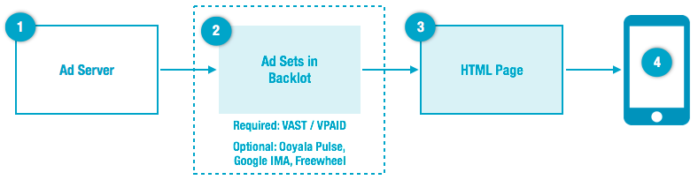

The following figure shows the high-level workflow of integrating ads with Player V4.

Step 1: Create Ads
Work with your ad server/ad manager to create
ads. See
Ad Types for definitions of
commonly used ad types.
Step 2: Create Ad Sets and Link to Video Assets in Backlot
Note:
- Required for VAST and VPAID ads.
- Optional for Ooyala Pulse, Google IMA and FreeWheel ads. If you want ads
associated with your video, if you do not associate an ad set with your
video asset in Backlot, you must associate ads with your players and video
asset via ad manager-specific page level parameters.
Create ad sets in Backlot and associate them with your video assets.
- Create an ad set in Backlot with the Backlot UI or Backlot API. Ad sets are ad configurations that control
the ad experience of an asset during playback.
- Assign an ad set to an asset or multiple assets with the Backlot
UI, Backlot
API, or Player API.
Note: With the Player API, you can associate an ad set only with an asset on your web
page. To associate an ad set with an asset on multiple playersm you must replicate
the code for each player. With the Backlot API, you can associate an ad set with an
asset more concretely. That is, when you associate an asset with an ad set using the
Backlot API, the asset and the ad set will be paired together on any player and page
on which you play the asset.
Note: For VAST and VPAID ads, you must create an
ad set in Backlot and associate it with your asset via Backlot.
Step 3: Integrate Ads on the HTML Page
Integrate your ad
manager with the V4 player at the (HTML5) page-level by loading the relevant ad plugin
and, optionally, specifying parameters to configure your ads and associate ads with your
players and video assets.
Note: You must load the ad plugin for ads to work with your
player.
Step 4: View Ad Content
The video consumer is now able to view
the ad content associated with the video asset.